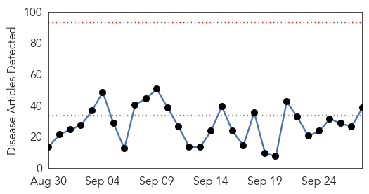
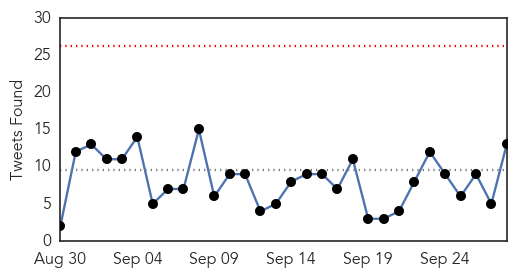
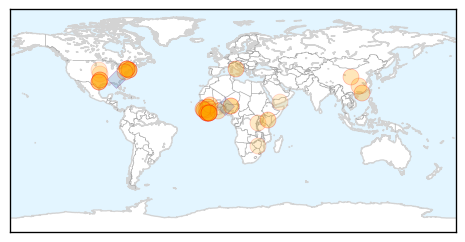
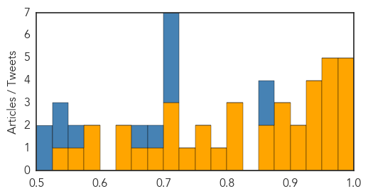

Ebola
30-Day Web Trend
0 alerts, 0 warnings

30-Day Twitter Trend
0 alerts, 0 warnings

Article Locations
Article Confidences
Top Articles:
- 0.994
- Ebola in Dallas: Stories, videos, photos, graphics and resources from The Dallas Morning News
- 0.994
- Airport Screening 'Doesn't Really Pick Up Ebola'
- 0.993
- The slow, steady battle for Guineans’ trust in the Ebola vaccine
- 0.990
- The Secret of Mali's Ebola Response Success, and How It Could Transform Child Health
- 0.981
- US Ebola survivor continues work in Liberia
- 0.973
- Update: Frisco officials say risk is low that sheriff’s deputy who visited Duncan’s apartment has Ebola
- 0.961
- Kenya Airways resumes West Africa flights
- 0.959
- Liberia Wrestles With Economic Woes Following Ebola Crisis
- 0.959
- LIBERIA: Additional Experimental Drugs For Ebola Arrives In Liberia
- 0.957
- Liberia struggles to regain economic footing after Ebola
- 0.949
- Liberian Senate Stresses Need For State Of Emergency
- 0.941
- Liberia struggles to regain economic footing after Ebola
- 0.936
- Young Scientist Bags Google Science Prize For Ebola Express Detection Kit
- 0.926
- Johns Hopkins and DuPont Join Forces to Produce an Improved Ebola Protection Suit
- 0.919
- Johns Hopkins and DuPont Join Forces to Produce an Improved Ebola Protection Suit NYSE
- 0.917
- WHO Director Chan: Improved Living Conditions Bring Rise of Noninfectious Diseases
- 0.899
- Chip-based technology enables reliable direct detection of Ebola virus
- 0.895
- We Want You To Live – Liberia's Fight Against Ebola
- 0.876
- Dr. Rick Sacra on how he survived Ebola a year ago
- 0.867
- Agenzia Giornalistica Italia
- 0.852
- New £23 million Centre for Virus Research Officially Opened
- 0.818
- Xi says China will boost cooperation with Sierra Leone, Nigeria[1]- Chinadaily.com.cn
- 0.805
- Five Dallas ISD students may have had contact with Ebola patient, none are sick
- 0.800
- UN launches new joint partnership to help countries close gaps in primary health care
- 0.788
- New partnership to help countries close gaps in primary health care
- 0.762
- Chinese medical team awarded
- 0.752
- UN launches joint partnership to help countries close gaps in primary health care
- 0.740
- Greenwich High junior takes home Google’s top science prize
- 0.725
- Ebola countdown began yesterday « Awoko Newspaper
- 0.715
- 16 Countries Request Int'l Aid To Liberia’s Socio-Economic Growth
- 0.700
- WHO Removes Nigeria From List of Polio-Endemic Countries ‹ Newsweek Pakistan
- 0.687
- Pakistan, Afghanistan only polio-endemic nations
- 0.656
- Abundance Project for Global Health's Rapid Response to Ebola crisis Featured at 2015 Clinton Global Initiative Annual Meeting
- 0.649
- Abundance Project for Global Health's Rapid Response to Ebola crisis Featured at 2015 Clinton Global Initiative Annual Meeting
- 0.638
- Audit Report Cites Inconsistencies
- 0.600
- Connecticut teen invents Ebola test, wins science fair « CBS Connecticut
- 0.581
- Concern, but not panic, over Ebola case in the M streets of Dallas
- 0.559
- NBC correspondent Dr. Nancy Snyderman and team will self-quarantine for 21 days
- 0.530
- Enters hospital textile market
Top Tweets:
- 0.874
- RT: Infection control critical to protect health care workers & prevent transmission. One of 3 Ebola lessons http://t…
- 0.870
- After Ebola Texas Health Presbyterian Hospital Rebounded - KERA News http://t.co/hb9qWQYi6I ebola EVD
- 0.717
- 4.Yusuf Manji's Quality Group is a major partner of the having donated $500000 towards Africa’s response to Ebola outbreak
- 0.703
- So close to Ebola yet Dallas household stayed well - Dallas Morning News http://t.co/a0yrpDVuHI ebola EVD
- 0.703
- So close to Ebola yet Dallas household stayed well - Dallas Morning News http://t.co/Cy9Ot2HEdz ebola EVD
- 0.701
- Liberia Wrestles With Economic Woes Following Ebola Crisis - Tech Times http://t.co/UBLolTtJyB ebola EVD
- 0.684
- Sierra Leone Begins New Ebola 42-day Countdown - Voice of America http://t.co/dO0eFN6qeN ebola EVD
- 0.663
- China's aid to Ebola-affected countries wins praise - CCTV http://t.co/81T9mbsAV0 ebola EVD
- 0.551
- Infection control critical to protect health care workers & prevent transmission. One of 3 Ebola lessons http://t.co/lzlaLqkh4w
- 0.550
- The slow steady battle for Guineans' trust in the Ebola vaccine - The Globe and Mail http://t.co/WBGkgJUoe3 ebola EVD
- 0.550
- The slow steady battle for Guineans' trust in the Ebola vaccine - The Globe and Mail http://t.co/Ey22kJhhwl ebola EVD
- 0.507
- Implementation and management of contacttracing for Ebola virus disease http://t.co/zqVHGjnZs1
- 0.505
- One year after Ebola: Dallas leaders look back - WFAA http://t.co/fZOPE0Mgmm ebola EVD
Dengue Fever
30-Day Web Trend
15 alerts, 4 warnings

30-Day Twitter Trend
3 alerts, 0 warnings

Article Locations


Article Confidences

Top Articles:
- 0.997
- Dengue Fever Hits 39,000 in Viet Nam
- 0.985
- No let up in dengue and H1N1 cases in Bhopal
- 0.982
- Results for potential mosquito-borne virus expected Friday
- 0.976
- Hong Kong officials provide update on dengue fever
- 0.975
- Figure out this dengue math
- 0.972
- Another 152 tested positive during Eid holidays taking tally to 773
- 0.962
- Dengue scare not over, but situation under control: Delhi govt
- 0.944
- Dengue scare not over, but situation under control: Delhi govt
- 0.937
- Tainan dengue cases soar, typhoon poses problem
- 0.918
- All doctors in dengue ward, others suffer : India, News
- 0.905
- DOH deploys dengue express lanes
- 0.898
- Higher than last year’s: Cebu City with most dengue cases in Central Visayas
- 0.889
- Dengue menace: CGHS open for non-beneficiaries too
- 0.859
- Dengue claims its ‘first victim’ in Rawalpindi
- 0.812
- Numbers swell at dengue ward
- 0.787
- Can America cope with a resurgence of tropical disease?
- 0.734
- Dengue surveillance monitored
- 0.643
- 87 cases dengue cases reported in B'luru Urban dist
- 0.562
- Red Cross and Red Crescent relief aid in Yemen
- 0.523
- The U.S. and Mexico: Addressing a shared legacy of neglected tropical diseases and poverty
Top Tweets:
-
No tweets found for Sep 28, 2015